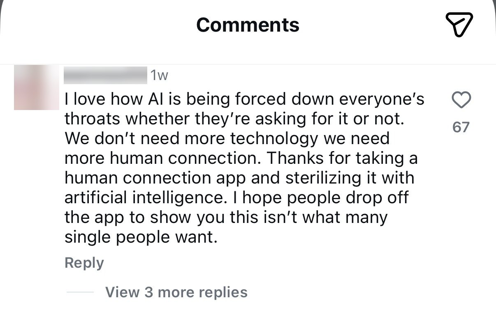

Project overview
1Soul (OneSoul) is an AI-matchmaking product built around "Agent Cupid": instead of swiping through profiles, users talk to Cupid on WhatsApp, and Cupid introduces them to a small number of real, considered matches. It launched first among students at Imperial College London and has since expanded across London universities.
I joined as Founding Product Manager, working alongside the founder rather than leading the venture. I independently owned product design, brand and trust-building, and the product's direction, running an AI-design-AI pipeline end to end: using AI to accelerate research synthesis and iteration, always grounded in real user evidence rather than AI's own assumptions.
Product positioning
The team had already decided what 1Soul was for by the time I joined: serious one-to-one connection, not casual dating. That was settled. What was not settled was how the product should work, and who it should be built for first. That part was mine.
The audience at launch was narrow and specific. University women in London who want a serious relationship. We started at Imperial College London and grew out from there. Everything below is aimed at that person, and the narrowness is what made the decisions possible.
I did this before anything was drawn. The website further down is what it looks like on screen. The thinking below is what decided it.
Market research
I looked at the dating apps people already use.
Most of them run at roughly six or seven men to three or four women. That gap is wide enough to shape everything else. It is the reason these products feel the way they feel. Men send a lot of messages and get nothing back. Women open the app and find themselves buried in messages from strangers. The product gets worse for both sides, and the ratio keeps getting worse with it.
How people arrive
Then I watched how people arrive. Women join a dating app because it makes them feel good. Men join because women are already there.
The order matters, and most products have it backwards. Pull in a lot of men and you get volume with no retention. 1Soul is for serious connection, so we build for women first. The men come on their own after that.
So I set the positioning before we designed anything. 1Soul is built for the university woman who wants something serious, and the product has to prove that in the first interaction, not in the marketing. Everything after this decision had to answer to it.
Being able to name her that precisely mattered. She is a student, so she already lives inside a small world of shared campuses and mutual friends. She has more to lose socially if an introduction goes wrong, because the people involved are people she will see again. Both of those shaped what came next.
What I borrowed: Secret Santa
I needed a shape for the mechanic, so I looked at things women already enjoy. Secret Santa kept coming back. It is a room full of people who know each other. Every person has a gift with their name on it. Nobody knows who picked theirs, and the whole point is that you find out slowly.
Three things make it work, and I took all three.
You are in a room with people you already trust. Nobody is a stranger, and nobody is alone with a stranger. The setting does the reassuring before anything is opened.
There is no worry about being left out. Your name is already on something. That certainty is what lets you enjoy the waiting instead of competing for attention.
You are given one small hint, never the full answer. So you stay curious, you stay in control, and you choose when to open it. Nobody opens it for you.
That last one is the part dating apps get wrong. A dating app hands over a full profile, a photo and a name, and asks a woman to judge a stranger from a card. She gets everything at once and no say in when it arrives. Secret Santa suggested another way in: give her a little, let her be curious, and leave the decision with her.
Research showed the two sides feel this very differently. Women are uncomfortable putting their own information out there, and they are also unwilling to let an AI date on their behalf. Being handed a finished answer feels like being replaced and managed. What they want is more real information about the other person, and then the choice. Men are much more relaxed about showing themselves. Putting up photos and details costs them very little worry. So the same feature lands in two different places, and the design has to hold both.
This only makes sense because of what 1Soul is. It is built for people looking for a serious relationship. So slowing the first interaction down works in our favour. Someone who wants something serious will happily wait for one good introduction. Someone who wants to swipe will go elsewhere, and that is fine, because they were never who this is for.
How it runs: online first, then a room
This is the strategy we launched with, and it runs across both online and offline.
Everyone starts in the same place. A man or a woman talks to Cupid, and Cupid works out who in the pool suits them best. Both sides get a match. If they want to take it further, we place them at a real event, something like a matcha party, with other people around. Everyone in the room is a student at a London university, so the setting already carries some of the trust a stranger meeting never would.
The event itself is built like Secret Santa. Everyone in the room knows their match is there. Nobody is handed a name. The woman gets the richer clue. She learns more about him than he learns about her, and she is the one who can move things forward. That asymmetry is deliberate. It answers the exact thing women told us in research: they feel unsafe going in blind, and they want more real information before they decide anything.
So she arrives already knowing something. She can watch the room first. She can start the conversation when she is ready, or not at all. The man cannot open a queue and start sending, and he cannot skip ahead of her.
Deciding what got built first
I wrote the feature list and I ordered it. This covers the people who sign up online and want to come to the group events offline. Not everything could ship, so I ranked each feature against one question: does this make the first interaction feel safe for her?
- Clue first. Highest priority. It is the mechanic, so nothing else mattered until it worked.
- No swipe queue. High. A queue would have undone the whole positioning, so we never built one.
- She sets the pace. High. No countdown and no pressure to reply, because urgency is what makes these products feel unsafe.
- Profile depth for men. Lower. Men were not the constraint. Adding more for them first would have cost us the thing we were solving.
Content planning for social
A product like this lives or dies on how it is explained, so I planned the social content too. I wrote the video concepts and decided what each one had to do. Some pieces explained the mechanic, because "you get a clue first" needs showing rather than telling. Some pieces carried the tone, so the account felt like a person and not a brand. I also chose what we would not post: nothing that looked like a swipe queue, and nothing that promised a match.
The biggest rule came from watching the Bumble post fail. We kept the talk about AI to a minimum. Leading with the technology is what set people off there, so our posts lead with the people and the evening, and let Cupid stay in the background. It gives people room to be comfortable with it in their own time.
User research
Competitor signal mining, and the AI backlash
Before writing a word of positioning, I went looking for what real daters actually think about AI in dating. The clearest signal I found was a post by the founder of Bumble, announcing that AI would take over the swiping. The post has since been deleted. The comment section under it was the most useful research I did on this project.
What I saw reading it was a split. The pushback came mostly from women. The men in the thread were far more relaxed, and some were positive about the idea. I was reading one comment section, so I could not treat that as a fact yet. I treated it as something to go and check.

Read it closely and the objection is specific. She does not say the technology fails. She says it was forced on her, and that it sterilises the one thing she came for. People will hand AI their calendar and their inbox. Romance is different. It is the place where they most want the other person to be real, and where being handed a finished answer feels like being pushed out of your own life.
Checking whether the split was real
One comment section is an anecdote. So I looked for population-level data on how men and women differ on AI, and the gap is well documented.
The same survey found 68% of women say AI is moving too quickly, against 58% of men. A separate study of around 3,000 people in the US and Canada found women rate AI as riskier than men do, and traced it to two things: higher general risk aversion, and greater exposure to the jobs AI disrupts first.
So the split I saw in that thread holds up at scale. Women rarely object to the technology in principle. They are quicker to read it as a risk being placed on them, and slower to accept it when nobody asked. In dating, where the stakes are personal safety rather than a spreadsheet, that gap gets wider.
These surveys cover adults in general, and our launch audience was narrower than that: university women in London looking for something serious. So I used the data as a direction to check my instinct against, and I used our own interviews for the specifics. Both pointed the same way.
Three patterns came out of the comment section itself:
- The strongest backlash was to any language implying AI replaces or handles the relationship itself. The "AI dates AI, then you meet" framing was rejected even by people who liked the underlying idea.
- The second-strongest concern was privacy and deepfakes. Users asked directly how their photos would be protected, a trust gap the competitor's own page never addressed.
- One notably positive comment confirmed the mechanic itself was welcome: AI narrowing the field before a human commits time. The problem was never the idea. It was the wording.
So my read was two-sided. There is a real opportunity for AI here, and the same evidence is a warning about how to enter. The job is to leave people room to feel in charge, so the AI never reads as something being done to them.
What I wrote because of it
The positioning was already settled by this point, so this went straight into the words on the page. I wrote these three lines to take the edge off a woman's natural guard about AI coming into her love life.
Be seriously matched, not just casually seen.
Cupid helps match; you decide to love.
Cupid works all that in the background, you stay in the foreground to love.
Each one puts Cupid behind the person. It finds and it narrows, and the person is still the one doing the loving. That is the line I did not want the product to cross in its own copy.
User interviews
I ran four in-depth interviews with people in the target audience, university students in London who were a mix of current and lapsed dating-app users. I then used AI to help cluster the raw transcripts by problem type rather than by interviewee, so findings could be prioritised and acted on. That synthesis surfaced eight areas, the highest-priority being:
- Brand tone: the site read as "dark" and "mysterious," more like a spellbook than a dating product, undercutting the fact that it's built for serious daters
- Unclear audience: is this for students only, or everyone? The "Connecting students at…" module was described as confusing rather than reassuring
- Trust & safety, especially for women: one participant was uneasy that a match arrived with a name but no photo or shared context, and said she would never accept an AI-scheduled meeting without a conversation first
- AI credibility: participants were curious what Cupid actually does (chat with you? pick the venue?) but the product didn't say
Website redesign
The site had to carry the positioning above. If a woman reads it and still thinks this is another swipe app, the copy on the page has failed, whatever the product does later.
The research reframed the brief. The real problem sat in trust and positioning, well underneath the visuals. Three shifts drove the redesign: soften the "AI decides for you" framing, replace investor-speak social proof with something specific and local, and give safety its own first-class section. Every change below traces back to a specific line from the interviews or the comment-mining exercise.
Before


Women's distrust of the platform wasn't just a research finding. It showed up directly in who actually turned up. At early events, the gender split ran roughly 9:1, men to women.
What women in and around the target audience said about the original site, in their own words:
After
Design principle: keep the mechanic (AI narrows the field), remove every word that implies the AI decides for you instead of with you, and replace every vague claim with a number a sceptical dater could sanity-check themselves. Research had called the original brand "like a spellbook," "untrustworthy," and "too heavy," so the redesign also meant rebuilding the colour system itself, away from mysterious near-black and gold toward a considered palette of sage, blush, plum and deep wine that reads as warm and serious rather than secretive.


The rebuilt colour system: sage, blush, plum and wine in place of the old mysterious near-black and gold, directly answering the "spellbook," "untrustworthy" and "too heavy" feedback from research.
The mechanic, in detail
The research backed the positioning. The sharpest hesitation belonged to women: being sent a name with no photo or shared context, and asked to trust an AI's judgement about who to meet. Reassuring copy would not have fixed that. The mechanic had to, and this is how she gets a clue first works in practice. When Cupid finds a match, the woman receives a small, specific hint on WhatsApp, a detail like "he plays the piano, just got back from Lisbon, and laughed at the exact same thing you did", enough to be curious, never enough to spoil the moment or feel like a dossier. The rest, and the decision of whether to go, stays entirely hers: "You decide what you do, always." "Girl first" isn't just a design principle here; it's literal copy inside the product's own onboarding flow.
This turns an abstract safety promise into something she can feel on the first interaction. She gets curiosity with consent, and the introduction never arrives cold.


Also part of the role
I worked on early growth as well. I ran an on-the-ground content strategy, which meant street interviews at London universities, timed so the filming and the sign-ups happened on the same day. I also wrote the playbooks for Instagram and TikTok, so each platform had its own plan rather than the same clip posted twice.
Want to try 1Soul?
Sign up here ↗